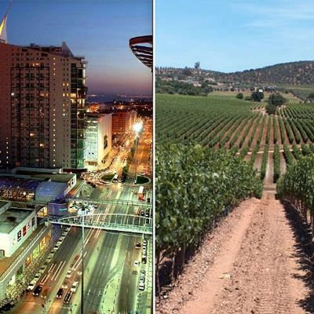

Buscando Possibilidades
Campo e a cidade possuem funções e atividades diferentes, mas que se complementam,cabe ao campo a produção dos alimentos e de matérias-primas utilizadas pela indústria.
As cidades se urbanizam, e tem como função principal a atividade industrial e o setor de serviços,o campo é compreendido pela zona rural, formado por propriedades rurais como: fazendas, chácaras e sítios.
A cidade é formada pela zona urbana, onde vive, atualmente, a maioria das pessoas.
Nas cidades são instaladas as indústrias, o comércio e as empresas de bens de serviços como: hospitais, escolas, dentistas, etc.

Qual a importância da relação entre o campo e a cidade?
Historicamente a relação entre cidade e campo é vista por meio da divisão do trabalho em: intelectual e manual, de modo que na cidade é beneficiado o produto oriundo do campo.
Como cidade no Brasil entendem-se os perímetros urbanos das sedes municipais, territórios e populações considerados urbanizados.

Qual é a relação entre campo e cidade?
Cidade e campo possuem o que se chama "relação de complementaridade".
Enquanto o campo produz os alimentos que serão consumidos na cidade, é nos centros urbanos que são produzidos os maquinários, os fertilizantes, os insumos que permitem a melhoria das condições de produção no campo.

Qual a diferença entre cidade e campo ou área rural?
Zona urbana são áreas municipais com elevado adensamento populacional e formação de habitações muito próximas. Enquanto, Zona Rural corresponde a um conjunto de atividades primárias (agricultura, pesca, etc), praticadas em áreas não ocupadas por cidades ou grandes adensamentos populacionais.